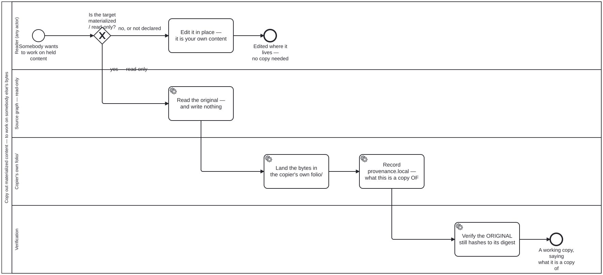

Generated from
cat-harness/skills/library/large-datasets/copy-out-materialized.md— do not edit here.
Working on materialized content — copy it out
Materialized content is a copy of somebody else’s bytes, and this repository does not edit it in place. The owner, 2026-09-21:
“if we have a materialized
<stub>/<sub-graph>, the contents of it should be immutable … you would need to copy/materialize it to your ownfolio/in order to mess around with it.”
And 2026-09-22, choosing between advising and enforcing: enforce from the start.
Diagram: copy-out-materialized.bpmn.
Schema: the folio-materialization/v1 record (MaterializationSchema, owned
by the content layer above this one — named here, not linked). Where they disagree,
the schema wins and this file is wrong.
What the rule protects, and what it does not
It protects the CLAIM. A materialized record asserts “these bytes are what
upstream published”. Editing them in place leaves that assertion standing over
bytes it no longer describes — and check:materialized-fixity is what catches
one that happened, by hashing the bytes against the digest the record carries.
It does not protect against the copy being wrong, stale or badly chosen.
Those are the five gates’ job, at materialisation time
(materialize-remote), and a copy-out re-opens none
of them: you are copying something this repository already decided it may hold.
Who may copy out
Any reader — the owner’s ruling, 2026-09-22. This is deliberately not a permission: refusing a copy would not protect the original, because the original is protected by being read-only. A gate here would only stop people working.
What copying out does NOT confer is the right to publish. The copy inherits its
source’s restrictions and copyright verdicts, and it is a new artefact in
your folio whose publication is your folio’s decision, judged the way any
other authored content is.
Where the copy goes
Into the copier’s own folio/, with provenance — owner’s ruling,
2026-09-22, chosen over a scratch area. The reason a scratch area lost is that
it makes the copy publishable by accident: a directory nobody declared is a
directory nobody gates.
The copy records what it is a copy of
This is the part that is easy to leave out and impossible to reconstruct later.
materialization.provenance is a pair:
| field | points at |
|---|---|
upstream | the remote thing — a URI, upstream |
local | the original in this repository it was taken from |
A copy-out writes local. It does not overwrite upstream, and it does not
reuse upstream for the local original — that was one field until 2026-09-22,
and by then 5 of the 9 who-iris item records were using it for a local value in
violation of its own documentation.
Without local, one rename later a copy is indistinguishable from original
work. That is the whole failure this step exists to prevent, and nothing
downstream can repair it: the information was never written down.
The copy is NOT read-only
A materialized node is frozen because it is a claim about somebody else’s
bytes. A copy in your own folio/ is yours, makes no such claim, and is
ordinary authored content — so it is writable, and its directory’s readOnly
is false.
If it were frozen too, the copy-out would achieve nothing, and the next person would need a copy of the copy.
The exception is “say what you did”, not a list of who may skip
The owner’s exception is “expect for publication worfklow purposes or so”. Written as an allowlist it would be a list that goes stale the first time somebody adds a sixth writer, and it would need every writer to announce itself — passing silently for anyone who forgot.
Written as a rule it is checkable and cannot go stale:
A step that rewrites a materialized artefact records the new fixity in the same change.
Then check:materialized-fixity passes and the record describes what is
actually there. A step that rewrites without updating fixity fails, correctly,
because it has forked upstream without saying so — which is exactly what the
rule exists to prevent. The check asks a question about BYTES and never about
who wrote them, so it needs no attribution of a commit to a process step.
Where this bites, measured
refresh-materialized.bpmn’s Task_Apply — the one step in the declared
corpus that rewrites bytes a materialization record describes. Until 2026-09-22
it named no fixity write at all, so a correct run of that process would have
failed the gate as a mismatch: “somebody edited held content without saying
so”, said about the one process whose job is to replace it.
And where it does NOT bite, also measured
No publication process in this repository writes to materialized content. kg-to-portal.bpmn’s S_Sign signs a subgraph cut from the KG — derived
content, not held upstream bytes — and nothing else comes close. So the
publication case is a rule with no instance yet, which is why it is stated here
as a rule rather than drawn as a step in a diagram that does not do it. A
declared-but-absent step is the dh4f defect: a consumer scans it and reports a
clean run over nothing.
What to check afterwards
bun run cat check:materialized-fixity— the original still hashes to its recorded digest. If it does not, the copy-out was an edit in place.bun run cat check:read-only-graphs— your folio’s directory is not accidentally declared read-only, and the source’s still is.
Processes that run this skill
This skill has its own process: Copy out materialized content — to work on somebody else’s bytes.

| process | step(s) that name it |
|---|---|
| Copy out materialized content — to work on somebody else’s bytes | Edit it in place — it is your own content; Read the original — and write nothing; Land the bytes in the copier’s own folio/; Record provenance.local — what this is a copy OF; Verify the ORIGINAL still hashes to its digest |